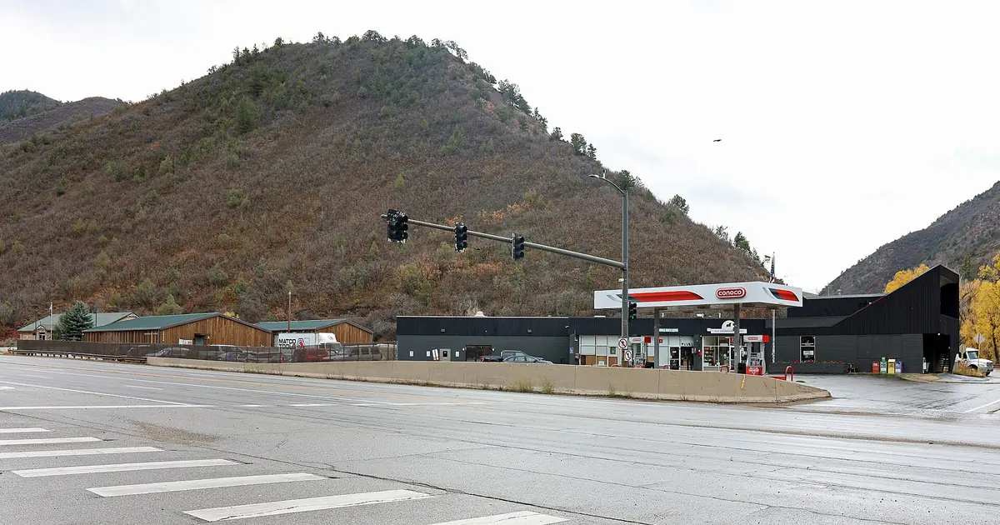

علو 0 °C فغرب ميريكان: من 7349 قدم حتى ل 14436 قدم، الحد ديال التلج حتى ل 13451 قدم (8 نونبر)
التوقعات ديالنا كتحط علو 0 °C فغرب ميريكان بين 7349 قدم (2240 م) و 14436 قدم (4400 م) فالأيام الجاية. فالساعات اللي سخونة كثر، الحد ديال التلج، تقريبا 984 قدم (300 م) تحت، كيوصل ل 13451 قدم (4100 م) ف Eagle Point نهار الأحد 8 نونبر.
شوف توقعات التلج مباشرة ديال Aspen Snowmass فالتطبيق ديال SnowScopeالعلو ديال التلج، التنبيهات والخريطة 3D، فابور.
علو 0 °C نهار بنهار
علو 0 °C فوق المحطات اللي لتحت، من أبرد ساعة حتى ل أسخن ساعة فكل نهار: الأحد 8 نونبر: من 8530 قدم (2600 م) حتى ل 14436 قدم (4400 م). الاثنين 9 نونبر: من 8202 قدم (2500 م) حتى ل 14370 قدم (4380 م). الثلاثاء 10 نونبر: من 7513 قدم (2290 م) حتى ل 14173 قدم (4320 م). الأربعاء 11 نونبر: من 7349 قدم (2240 م) حتى ل 13845 قدم (4220 م).
| المحطة | العلو ديال التلج | تلج جديد، 72 س | جاي، الأيام الجاية | الفوق |
|---|---|---|---|---|
| Aspen Snowmass | 17 إنش (43 سم) | 0 إنش (0 سم) | 0 إنش (0 سم) | 12516 قدم (3815 م) |
| Taos Ski Valley | 15 إنش (39 سم) | 0 إنش (0 سم) | 0 إنش (0 سم) | 11821 قدم (3603 م) |
| Crested Butte | 17 إنش (42 سم) | 0 إنش (0 سم) | 0 إنش (0 سم) | 11444 قدم (3488 م) |
| Beartooth Basin Summer | 16 إنش (40 سم) | 0 إنش (0 سم) | 0 إنش (0 سم) | 10922 قدم (3329 م) |
| Eagle Point | 34 إنش (87 سم) | 0 إنش (0 سم) | 0 إنش (0 سم) | 10571 قدم (3222 م) |

الحد ديال التلج فكل محطة
Aspen Snowmass (التحت 8117 قدم (2474 م)، الفوق 12516 قدم (3815 م)): الحد ديال التلج حتى ل تقريبا 12795 قدم (3900 م) نهار 9 نونبر، فوق القمة: شتا ولا تلج مبلول فالجبل كامل إلا طاحت الشتا.
Taos Ski Valley (التحت 9350 قدم (2850 م)، الفوق 11821 قدم (3603 م)): الحد ديال التلج حتى ل تقريبا 13123 قدم (4000 م) نهار 8 نونبر، فوق القمة: شتا ولا تلج مبلول فالجبل كامل إلا طاحت الشتا.
Crested Butte (التحت 9131 قدم (2783 م)، الفوق 11444 قدم (3488 م)): الحد ديال التلج حتى ل تقريبا 13123 قدم (4000 م) نهار 9 نونبر، فوق القمة: شتا ولا تلج مبلول فالجبل كامل إلا طاحت الشتا.
Beartooth Basin Summer (التحت 10377 قدم (3163 م)، الفوق 10922 قدم (3329 م)): الحد ديال التلج حتى ل تقريبا 10171 قدم (3100 م) نهار 8 نونبر، تحت البلاصة اللي التحت: أي شتا كتطيح تلج فكاع البيستات.
Eagle Point (التحت 9327 قدم (2843 م)، الفوق 10571 قدم (3222 م)): الحد ديال التلج حتى ل تقريبا 13451 قدم (4100 م) نهار 8 نونبر، فوق القمة: شتا ولا تلج مبلول فالجبل كامل إلا طاحت الشتا.
الشتا على التلج؟
Aspen Snowmass فيها تقريبا 17 إنش (43 سم) فالجهة الفوقانية، ونهار 10 نونبر و 11 نونبر الحد ديال التلج فوق الوسط ديال الجبل: الشتا على هاد التلج كتردو تقيل ومبلول، ومن بعد كيولي جليد ملي يجمد.
Taos Ski Valley فيها تقريبا 15 إنش (39 سم) فالجهة الفوقانية، ونهار 10 نونبر و 11 نونبر الحد ديال التلج فوق الوسط ديال الجبل: الشتا على هاد التلج كتردو تقيل ومبلول، ومن بعد كيولي جليد ملي يجمد.
Crested Butte فيها تقريبا 17 إنش (42 سم) فالجهة الفوقانية، ونهار 10 نونبر و 11 نونبر الحد ديال التلج فوق الوسط ديال الجبل: الشتا على هاد التلج كتردو تقيل ومبلول، ومن بعد كيولي جليد ملي يجمد.
ف Mt. Baker (5052 قدم (1540 م)) التوقعات كتعطي 105 مم ديال الشتا؛ فالساعات اللي فيها الشتا الحد ديال التلج قريب من 5774 قدم (1760 م).
علاش الحد ديال التلج تحت علو 0 °C
الهوا عادة كيبرد كل ما طلعتي. التلج اللي كيهبط تحت علو 0 °C كيبدا يدوب، وحيت الذوبان كياخد الوقت، التلج كيولي شتا غير تقريبا 984 قدم (300 م) لتحت: هادا هو الحد ديال التلج. فالهوا الناشف، التبخر كيبرد التلج اللي طايح والحد يقدر يهبط كثر.
نصايح للي كيتزلجو
- فالأيام السخونين، تزلج فالصباح فالتيليسييجات اللي فالفوق وفالجهات اللي كتشوف للشمال، قبل ما يرطاب التلج.
- علو 0 °C غير توقع ويقدر يتحرك بشي مئات ديال الميترات: عاود شوف الخريطة نهار قبل.
- قبل أي خرجة برا البيست ولا جولة، قرا النشرة الرسمية ديال الانهيارات (الروابط لتحت).
- التلج فالخريطة ماكيعنيش بلي المحطة محلولة: شوف التيليسييج والتواريخ فالموقع ديالها.
على هاد الأرقام
العلو ديال التلج فالمحطات هو أكثر تلج فالجهة الفوقانية حسب الموديل ديال التلج ديال SnowScope (تقريبا 1 كم، الحساب ديال 8 نونبر)؛ هادو تقديرات لمنطقة، ماشي قياس فنقطة وحدة. الأرقام ديال محطات القياس مقاسة فالتاريخ المكتوب. التوقعات يمكن تتبدل. ديما شوف النشرة الرسمية ديال الانهيارات قبل ما تخرج من البيست.
النشرات الرسمية ديال الانهيارات: avalanche.org
كيفاش تستاشهد بهاد المقال
للبحث، التعليم ولا الصحافة: الأرقام والرسومات تقدر تعاود تخدم بيهم بحرية تحت CC BY 4.0 مع هاد الاستشهاد.
SnowScope (2026), علو 0 °C فغرب ميريكان: من 7349 قدم حتى ل 14436 قدم، الحد ديال التلج حتى ل 13451 قدم (8 نونبر), https://snowscope.app/blog/ar/2026/11/us-west-freezing-level-snow-line-8-november-2026.html, تشاف ف 2026-11-08
SnowScope (Atlas Labs). (2026, November 8). علو 0 °C فغرب ميريكان: من 7349 قدم حتى ل 14436 قدم، الحد ديال التلج حتى ل 13451 قدم (8 نونبر). SnowScope snow reports. https://snowscope.app/blog/ar/2026/11/us-west-freezing-level-snow-line-8-november-2026.html
BibTeX
@misc{snowscope2026uswestfreezinglevelsnowl,
author = {{SnowScope (Atlas Labs)}},
title = {علو 0 °C فغرب ميريكان: من 7349 قدم حتى ل 14436 قدم، الحد ديال التلج حتى ل 13451 قدم (8 نونبر)},
year = {2026},
month = nov,
howpublished = {\url{https://snowscope.app/blog/ar/2026/11/us-west-freezing-level-snow-line-8-november-2026.html}},
note = {Published 2026-11-09 11:38 UTC; accessed 2026-11-08}
}· CC BY 4.0 · الطريقة، الداتا والأدوات →
Aspen Snowmass: التلج والحرارة حسب العلو، هاد الشتا مقارنة مع اللي فاتت (الأدوات) →